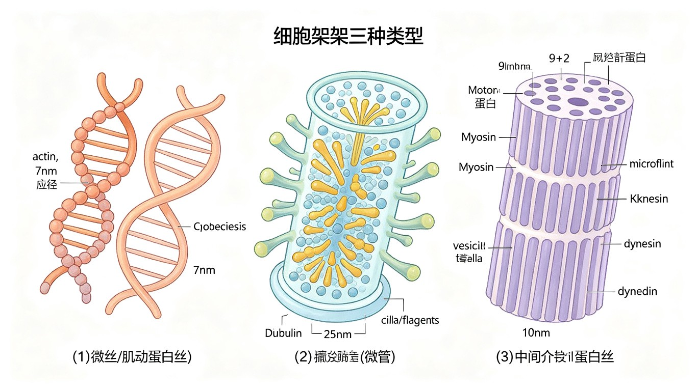

细胞骨架概述
细胞骨架（cytoskeleton）是真核细胞中由蛋白质纤维组成的复杂三维网络结构，负责维持细胞形态、细胞运动、细胞分裂、胞内物质运输和信号转导。细胞骨架由三类主要纤维组成：微管（microtubule, MT）、微丝（microfilament, MF/actin filament）和中间纤维（intermediate filament, IF）。
三类细胞骨架纤维的比较：
- 微管：直径最大（~25 nm），中空管状结构，由 α/β-微管蛋白二聚体组装而成。是细胞骨架中最粗的纤维。
- 微丝：直径最小（~7 nm），实心双股螺旋结构，由 G-actin 单体聚合而成。又称肌动蛋白丝。
- 中间纤维：直径居中（~10 nm），绳状结构，由多种中间纤维蛋白组装而成。是三类纤维中最稳定的。
细胞骨架的共同特征：①均由小的蛋白质亚基通过非共价键聚合而成；②具有极性（微管和微丝有极性，中间纤维无极性）；③高度动态，持续进行聚合和解聚；④与多种辅助蛋白（马达蛋白、交联蛋白、切割蛋白等）协同工作。

微管：结构与组装
微管（microtubule）是由 α-微管蛋白和 β-微管蛋白组成的异二聚体聚合而成的中空管状结构。微管壁由13 根原纤维（protofilament）平行排列而成，每根原纤维由 α/β-微管蛋白交替排列成线性链。微管外径 ~25 nm，内径 ~15 nm。
微管组装动力学：
- 极性：微管有正端（+端，β-tubulin 暴露，生长快）和负端（-端，α-tubulin 暴露，生长慢）。在细胞内，负端通常锚定在微管组织中心（MTOC），正端向外延伸。
- GTP 帽（GTP cap）：α/β-tubulin 二聚体结合 GTP 后聚合到微管正端。聚合后，β-tubulin 上的 GTP 逐渐水解为 GDP。当正端有 GTP-tubulin 帽时，微管稳定生长；当 GTP 帽丢失（GDP-tubulin 暴露），微管迅速解聚——称为动态不稳定性（dynamic instability）。
- 动态不稳定性：微管在生长和缩短之间随机切换。从生长转为缩短称为"灾难"（catastrophe），从缩短转为生长称为"救援"（rescue）。这一特性使微管能够快速重组，适应细胞需求。
- 微管组织中心（MTOC）：中心体（centrosome）是动物细胞最主要的 MTOC，含一对中心粒（centriole）和周围物质（PCM，含 γ-tubulin 环复合体 γ-TuRC）。γ-tubulin 为微管成核提供模板。
微管相关药物：
- 秋水仙素（colchicine）：与 β-tubulin 结合，阻止微管聚合，使微管解聚。抑制有丝分裂纺锤体形成，导致细胞停滞在中期。用于治疗痛风（抑制炎症细胞迁移）和制备染色体核型。
- 紫杉醇（taxol/paclitaxel）：与 β-tubulin 结合，稳定微管，阻止微管解聚。抑制有丝分裂纺锤体的动态重组，使细胞停滞在有丝分裂期。用于抗癌治疗（卵巢癌、乳腺癌等）。
- 长春碱（vinblastine）和长春新碱（vincristine）：与 β-tubulin 结合，促使微管解聚。也用于抗癌治疗（白血病、淋巴瘤）。
- 诺考达唑（nocodazole）：可逆地抑制微管聚合，常用于细胞生物学实验。
微管马达蛋白：
- 驱动蛋白（kinesin）：大多数向微管 +端（正端）运输（anterograde），少数向 -端运输。由两条重链（含马达结构域）和两条轻链组成。负责膜泡运输（如神经元轴突中的快轴突运输）、细胞器定位等。
- 动力蛋白（dynein）：向微管 -端（负端）运输（retrograde）。细胞质动力蛋白（cytoplasmic dynein）参与膜泡运输、高尔基体定位等；轴丝动力蛋白（axonemal dynein）驱动纤毛和鞭毛的运动。
微管的功能：①维持细胞形态；②细胞分裂——形成有丝分裂纺锤体（着丝粒微管、极微管、星体微管）；③胞内运输——膜泡和细胞器沿微管移动；④纤毛和鞭毛——轴丝由"9+2"微管排列组成（9 组外周二联微管 + 2 根中央单微管）。
微丝：结构与功能
微丝（microfilament/actin filament）由G-actin（球状肌动蛋白单体，43 kDa）聚合而成的双股螺旋状纤维（F-actin），直径约 7 nm。肌动蛋白是高度保守的蛋白质，在进化中几乎不变（酵母和人类肌动蛋白 90% 以上同源）。
微丝组装动力学：
- 极性：微丝有正端（+端，barbed end，倒刺端，生长快）和负端（-端，pointed end，尖端，生长慢）。G-actin 结合 ATP 后倾向于聚合到 +端。
- 踏车行为（treadmilling）：在稳态条件下，G-actin 在 +端持续添加（聚合），同时在 -端持续脱落（解聚），微丝整体长度不变但亚基不断流动。ATP-actin 在 +端聚合后，ATP 水解为 ADP，ADP-actin 在 -端解离。
- 成核：微丝成核需要 ARP2/3 复合体（Arp2/3 complex）或 formin 蛋白。ARP2/3 结合已有微丝侧面，启动分支微丝的形成（树枝状网络）；formin 促进线性微丝的生长。
微丝相关药物：
- 细胞松弛素（cytochalasin）：与微丝 +端结合，阻止聚合，导致微丝解聚。抑制胞质分裂（cytokinesis）和细胞运动。
- 鬼笔环肽（phalloidin）：与 F-actin 结合，稳定微丝，阻止解聚。荧光标记的鬼笔环肽（如 phalloidin-Alexa）是常用的微丝染色试剂。
- 拉春库林（latrunculin）：与 G-actin 单体结合，阻止聚合。常用于细胞生物学研究。
微丝马达蛋白——肌球蛋白（myosin）：
- 肌球蛋白 II（myosin II）：经典的肌肉肌球蛋白，由两条重链和两对轻链（必需轻链 + 调节轻链）组成。两个头部分别具有 ATPase 活性和 actin 结合位点，尾部形成双股螺旋卷曲螺旋（coiled-coil），可组装成双极性的粗肌丝（thick filament）。负责肌肉收缩和胞质分裂中的收缩环。
- 肌球蛋白 V（myosin V）：向微丝 +端运输的持续型马达蛋白，负责膜泡和细胞器运输。
- 肌球蛋白 I（myosin I）：单头马达蛋白，参与膜-细胞骨架连接和内吞作用。
微丝的主要功能：
- 肌肉收缩：骨骼肌中，肌球蛋白 II 粗肌丝与 F-actin 细肌丝通过滑行机制产生收缩力（滑行丝模型，sliding filament model）。Ca²⁺ 与肌钙蛋白（troponin）结合，暴露肌动蛋白上的肌球蛋白结合位点，解除原肌球蛋白（tropomyosin）的抑制。
- 细胞运动：片状伪足（lamellipodium，树枝状 actin 网络）和丝状伪足（filopodium，平行 actin 束）通过 actin 聚合推动细胞膜前移。细胞迁移的四个步骤：突出（protrusion）→黏附（adhesion）→收缩（contraction）→尾部脱离（detachment）。
- 胞质分裂：动物细胞分裂末期，肌球蛋白 II 和 F-actin 组成收缩环（contractile ring），收缩产生分裂沟，将细胞一分为二。
- 细胞形态维持：微丝在质膜下形成细胞皮层（cell cortex），维持细胞形状和机械强度。如小肠上皮细胞微绒毛中的平行 actin 束支撑微绒毛结构。
中间纤维：结构与功能
中间纤维（intermediate filament, IF）是三类细胞骨架纤维中最稳定的一类，直径约 10 nm。中间纤维的组装不需要核苷酸（与微管需要 GTP、微丝需要 ATP 不同），且无极性（两端相同）。
中间纤维的组装：中间纤维蛋白单体首先形成平行双股卷曲螺旋二聚体→两个二聚体反向平行排列形成四聚体（tetramer）→四聚体纵向连接形成原纤维→8 根原纤维螺旋排列形成最终的中间纤维（10 nm）。由于四聚体是反向平行排列的，中间纤维无极性——这是其区别于微管和微丝的重要特征。
中间纤维的六类分类：
- I 型：酸性角蛋白（acidic keratin），存在于上皮细胞中。分子量较小（40-64 kDa）。
- II 型：碱性/中性角蛋白（basic/neutral keratin），存在于上皮细胞中。分子量较大（52-68 kDa）。I 型和 II 型角蛋白以 1:1 比例形成异二聚体。
- III 型：包括波形蛋白（vimentin，间充质细胞）、结蛋白（desmin，肌肉细胞）、GFAP（胶质纤维酸性蛋白，胶质细胞/星形胶质细胞）、外周蛋白（peripherin，外周神经元）。
- IV 型：神经丝蛋白（neurofilament protein，NF-L/NF-M/NF-H），存在于神经元中，与轴突直径相关。
- V 型：核纤层蛋白（lamin A/B/C），存在于所有真核细胞的细胞核内，构成核纤层（nuclear lamina）。核纤层蛋白是唯一存在于细胞核内的中间纤维蛋白。
- VI 型：nestin（巢蛋白），存在于神经干细胞和肌肉中，通常与其他中间纤维共表达。
中间纤维类型的鉴定在肿瘤病理诊断中有重要价值——通过免疫组化检测中间纤维类型可确定肿瘤的组织来源（如角蛋白阳性提示上皮来源癌，波形蛋白阳性提示间充质来源肉瘤）。
三类骨架纤维三维对比
| 特征 | 微管 (MT) | 微丝 (MF) | 中间纤维 (IF) |
|---|---|---|---|
| 直径 | ~25 nm（最粗） | ~7 nm（最细） | ~10 nm（居中） |
| 结构 | 中空管状，13 根原纤维 | 双股螺旋实心结构 | 绳状，8 根原纤维螺旋排列 |
| 亚基 | α/β-tubulin 异二聚体 (55 kDa) | G-actin 单体 (43 kDa) | 多种 IF 蛋白（40-200 kDa） |
| 核苷酸 | GTP | ATP | 不需要 |
| 极性 | 有（+端/-端） | 有（+端/-端） | 无极性 |
| 成核位点 | 中心体（γ-tubulin） | ARP2/3 复合体，formin | 自发组装 |
| 马达蛋白 | kinesin (+端), dynein (-端) | myosin 家族 (+端) | 无已知马达蛋白 |
| 主要功能 | 细胞分裂（纺锤体）、运输、纤毛/鞭毛 | 肌肉收缩、细胞运动、胞质分裂 | 机械支撑、核纤层、细胞连接 |
| 特异性药物 | 秋水仙素（解聚）、紫杉醇（稳定） | 细胞松弛素（解聚）、鬼笔环肽（稳定） | 无特异性药物 |
| 动态性 | 高（动态不稳定性） | 高（踏车行为） | 低（最稳定） |
植物细胞的后含物与细胞壁
植物后含物（ergastic substances）是植物细胞代谢产生的非原生质体成分，包括储藏物质、分泌物和废物。植物细胞没有动物细胞那样的细胞骨架介导的细胞运动，但其细胞壁提供了结构支撑。
主要后含物类型：
- 淀粉（starch）：最常见的储藏多糖，以淀粉粒形式存在于造粉体（amyloplast）中。由直链淀粉（amylose，α-1,4 糖苷键，螺旋结构）和支链淀粉（amylopectin，α-1,4 + α-1,6 分支点）组成。淀粉粒在偏光显微镜下呈马尔他十字（Maltese cross）。
- 蛋白质：以糊粉粒（aleurone grain）形式储存，存在于种子（特别是禾本科植物种子胚乳的糊粉层）中。糊粉粒是液泡中蛋白质结晶形成的颗粒。
- 脂肪和油：以油滴（oil body/oleosome）形式存在，外被单层磷脂膜（含油体蛋白 oleosin）。存在于油料种子（如花生、油菜籽）的子叶和胚乳中。
- 晶体：草酸钙结晶（calcium oxalate crystal）——针晶（raphide）、柱晶（styloid）、晶簇（druse）、砂晶（crystal sand）等。存在于多种植物细胞液泡中，可能参与钙调节和防御（如天南星科植物的针晶可刺激口腔黏膜）。
- 单宁（tannin）：酚类化合物，存在于液泡或细胞壁中，具有抗菌和防御功能，也使植物组织呈涩味。
本节必背考点
- 三类骨架：微管（25 nm, 13 原纤维, α/β-tubulin, GTP, 动态不稳定性）→微丝（7 nm, G-actin, ATP, 踏车行为）→中间纤维（10 nm, 无极性, 无需核苷酸, 最稳定）。
- 微管药物：秋水仙素（解聚）、紫杉醇（稳定）、长春碱（解聚）。马达蛋白：kinesin（+端）、dynein（-端）。纤毛/鞭毛=9+2 微管排列。
- 微丝药物：细胞松弛素（解聚，+端封盖）、鬼笔环肽（稳定 F-actin，荧光标记）、拉春库林（结合 G-actin）。肌球蛋白 II（+端马达，肌肉收缩/胞质分裂）。
- 中间纤维六类：I/II 角蛋白（上皮）、III（vimentin/desmin/GFAP）、IV 神经丝、V 核纤层蛋白 lamin、VI nestin。
- 植物后含物：淀粉粒（造粉体）、糊粉粒（蛋白质）、油滴（oleosin）、草酸钙结晶（针晶/晶簇等）、单宁。
补充内容：分子马达与胞内运输
分子马达的通用机制：所有分子马达蛋白（myosin, kinesin, dynein）都通过 ATP 水解循环驱动构象变化，沿细胞骨架纤维定向移动。一个完整的 ATP 水解循环（ATP 结合→水解→Pi 释放→ADP 释放）对应一次"机械步进"（power stroke）。
神经元中的轴突运输：神经元轴突是胞内运输的极端例子——轴突可长达 1 米，但蛋白质合成几乎全部在胞体进行。快轴突运输（fast axonal transport，~200-400 mm/day）由 kinesin（顺行，胞体→突触）和 dynein（逆行，突触→胞体）沿微管介导，运输膜泡、线粒体等。慢轴突运输（slow axonal transport，~0.2-8 mm/day）运输细胞骨架蛋白和可溶性蛋白。阿尔茨海默病和帕金森病中轴突运输障碍是重要的病理机制。
纤毛/鞭毛的结构与运动：轴丝（axoneme）由"9+2"微管排列组成——9 组外周二联微管（A 管和 B 管，A 管为完全微管含 13 根原纤维，B 管为不完全微管含 10-11 根原纤维）围绕 2 根中央单微管。外周二联微管之间通过nexin 蛋白（弹性连接）连接，二联微管与中央鞘之间通过放射辐（radial spoke）连接。轴丝动力蛋白（axonemal dynein）分布在 A 管上，其尾部固定在 A 管，头部与相邻 B 管相互作用，产生相邻二联微管之间的滑动。nexin 蛋白和放射辐将滑动转化为弯曲运动。纤毛运动是鞭毛内 ATP 驱动的微管滑动产生的波形运动。
细胞骨架与疾病
微管相关疾病：①Kartagener 综合征（原发性纤毛运动障碍）——轴丝动力蛋白缺陷，导致呼吸道纤毛不能有效清除黏液（反复呼吸道感染）、精子鞭毛不动（男性不育）、胚胎发育中内脏随机定位（约 50% 患者内脏反转，situs inversus）。②家族性偏瘫性偏头痛——钠通道和钙通道突变影响神经元微管运输。
微丝相关疾病：①Duchenne 肌营养不良症（DMD）——dystrophin 蛋白缺陷。Dystrophin 是连接肌细胞 actin 皮层与细胞外基质的桥梁蛋白。缺少 dystrophin 导致肌细胞膜在收缩过程中易受损，肌肉进行性退化。②Wiskott-Aldrich 综合征——WASP 蛋白（激活 ARP2/3 复合体）缺陷，影响免疫细胞 actin 骨架重组，导致免疫缺陷和血小板减少。
中间纤维相关疾病：①大疱性表皮松解症（epidermolysis bullosa simplex）——角蛋白 K5 或 K14 基因突变，表皮基底细胞中间纤维网络脆弱，轻微摩擦即可导致皮肤起泡。②肌萎缩侧索硬化症（ALS）——部分病例涉及神经丝蛋白（NF）异常聚集。③Alexander 病——GFAP 基因突变导致星形胶质细胞中 GFAP 异常聚集（Rosenthal 纤维）。
细胞骨架研究方法
免疫荧光技术（immunofluorescence）：使用针对特定细胞骨架蛋白的抗体（如抗 α-tubulin、抗 actin、抗 vimentin 抗体）联合荧光标记二抗，在荧光显微镜下观察细胞骨架的分布和动态变化。可直接固定细胞后用荧光鬼笔环肽标记 F-actin。这是细胞骨架研究最常用的技术。
FRAP（荧光漂白后恢复，fluorescence recovery after photobleaching）：用强激光漂白一小块区域的荧光标记蛋白，观察荧光恢复速率，可测量细胞骨架蛋白的动态周转率。如 GFP-tubulin 的 FRAP 实验显示微管在数秒内即可完全恢复，证明了微管的动态不稳定性。
体外聚合实验：纯化的 tubulin 或 actin 在试管中，在适当条件下（GTP/ATP, Mg²⁺, 温度）可自发聚合为微管或微丝。通过光散射或荧光标记可实时监测聚合动力学。该技术用于测定药物对聚合的影响以及马达蛋白的运动特性。
光学镊子（optical tweezers）和单分子技术：利用激光捕获单个微球，测量单个马达蛋白分子（kinesin, myosin）的步幅（step size）和力产生。kinesin 的步幅为 8 nm（等于一个 tubulin 二聚体的长度），myosin II 的步幅约为 5-15 nm。
高中教材衔接 · 课标对应
人教版必修1 第3章 "细胞的基本结构"——细胞骨架（细胞质中的支持结构）：高中课标要求①①细胞骨架——由蛋白质纤维组成的网架结构，与细胞运动、细胞分裂、物质运输、能量转换、信息传递等生命活动密切相关；②细胞骨架的三种类型——微丝（microfilament，由肌动蛋白 actin 组成，参与细胞变形虫运动、胞质环流、变形虫）、微管（microtubule，由微管蛋白 tubulin 组成，参与细胞分裂纺锤体形成）、中间纤维（intermediate filament，由多种蛋白如角蛋白 keratin、波形蛋白 vimentin、层粘连蛋白 lamin 等组成，参与细胞结构支持）。
人教版必修1 第3章 "中心体"——动物细胞特有：中心体（centrosome）由两个相互垂直的中心粒（centriole）组成，分布在细胞核附近。中心体与动物细胞有丝分裂有关——在有丝分裂前期，中心粒发出星射线形成纺锤体，牵引染色体移动到细胞两极。低等植物细胞也有中心体，高等植物细胞没有中心体。
人教版必修1 第6章 "细胞分裂"——有丝分裂过程：① 分裂间期（DNA 复制、蛋白质合成、染色质螺旋化）；② 分裂期——前期（核膜核仁消失，染色质→染色体，中心粒移向两极并发出星射线形成纺锤体）、中期（染色体排列在赤道板上，着丝点连接纺锤丝）、后期（着丝点分裂，姐妹染色单体分开，由纺锤丝牵引移向两极）、末期（染色体到达两极变为染色质，核膜核仁重新出现，胞质分裂）。纺锤体由微管组成，染色体移动依赖微管的解聚/聚合动态。
人教版选择性必修1 "动物生命活动的调节"——肌肉收缩的分子机制：① 肌细胞内含有大量肌动蛋白（细丝）和肌球蛋白（粗丝）；② 神经冲动→肌膜去极化→T 管→肌浆网释放 Ca²⁺→Ca²⁺ 与肌钙蛋白结合→原肌球蛋白位移→暴露出肌动蛋白上的肌球蛋白结合位点→肌球蛋白头部与肌动蛋白结合并 ATP 水解→细丝滑动→肌肉收缩。肌肉收缩的滑动丝学说是高中核心内容。肌动蛋白和肌球蛋白是细胞骨架蛋白的延伸。
人教版选择性必修3 "细胞工程"——动物细胞培养与组织工程：① 动物细胞培养（原代培养→传代培养→细胞系）；② 细胞骨架在细胞培养中的关键作用——细胞贴壁（细胞骨架介导的黏着斑 + 整合素与培养皿表面的相互作用）；③ 干细胞分化的细胞骨架变化（微丝重构和形态学改变）。
2025 / 2026 联赛 · 初赛真题链接
本章重难点深度解析
重难点 1：微管动态不稳定性的分子机制
- GTP cap 模型（Mitchison & Kirschner 1984）：α/β-tubulin 异二聚体结合 GTP（特别是 β-tubulin 上的 GTP）。聚合时 GTP-tubulin 加入微管 + 端，β-tubulin 上的 GTP 在聚合后被水解为 GDP。微管 + 端保留一层 GTP cap 防止解聚。当 GTP cap 丢失（解聚追上 + 端），微管进入解聚态（catastrophe）。当微管重新获得 GTP cap，回归生长态（rescue）。这种"生长-解聚"的随机切换就是动态不稳定性（dynamic instability）。
- 微管踏车（treadmilling）：某些情况下微管 + 端聚合速率 = - 端解聚速率，微管整体长度不变，但 + 端不断加入新 tubulin，- 端不断脱落旧 tubulin。这种踏车行为是动态不稳定性的一种特殊形式。
- 微管相关蛋白（MAPs）：① 结构 MAP——MAP2, MAP4, Tau（神经元特异）；② 动力学调节——XMAP215/chTOG（+ 端聚合促进）、MCAK/Kinesin-13（+ 端解聚促进）、stathmin（结合 tubulin 二聚体，阻止聚合）；③ 切割——katanin（切断微管）；④ + 端追踪蛋白——EB1, EB3（+TIP 蛋白，标记 + 端）。Tau 蛋白异常过度磷酸化是阿尔茨海默病神经原纤维缠结的主要成分。
- 微管在有丝分裂中的作用：① 纺锤体装配—— 中心体（centrosome）作为微管组织中心（MTOC），发出星射线；② 纺锤体极组织—— 中心体极附近微管（kinetochore MT 连接到染色体着丝点）；③ 染色体运动—— 动粒微管解聚/聚合驱动染色体向两极运动（Pacman 机制 + Poleward flux）；④ 胞质分裂—— 中央纺锤体（central spindle）引导收缩环（contractile ring，肌动蛋白-肌球蛋白 II）形成分裂沟。紫杉醇稳定微管阻止纺锤体解聚 → 染色体不能分离 → 癌细胞死亡。
重难点 2：肌动蛋白的成核、组装与细胞迁移
- 肌动蛋白成核机制：① Arp2/3 复合体（actin-related protein 2/3）—— 在母丝侧面分支形成 70° 子丝，形成分支网络（如细胞皮层 lamellipodium）。Arp2/3 本身活性低，需 NPFs（nucleation promoting factors, 如 WASP, N-WASP, WAVE/SCAR 复合体）激活。Wiskott-Aldrich 综合征（WASP 突变）—— 免疫缺陷 + 湿疹 + 血小板减少。② Formin（mDia1, mDia2, FHOD, INF2）—— 在母丝 + 端线性聚合形成平行束（如应力纤维 stress fiber、filopodium 内的平行肌动蛋白束）。③ Spire、Cobl 等其他成核因子。④ 膜结合肌动蛋白成核——WH2 域（肌动蛋白单体结合）+ formin 协同在质膜下成核。
- 细胞迁移（cell migration）的分子机制：① 前导缘（leading edge）—— 板状伪足 lamellipodium（Arp2/3 介导的分支网络）+ 丝状伪足 filopodium（formin 介导的平行束）通过肌动蛋白聚合推动膜前伸；② 前导缘黏着（focal adhesion）—— 整合素与 ECM 结合 → 招募 talin, vinculin, FAK, paxillin → 信号激活；③ 细胞收缩—— 应力纤维（stress fiber, 肌动蛋白 + 肌球蛋白 II 束）收缩；④ 后缘释放—— 黏着斑解体，细胞后缘收缩。Rac1 调控 lamellipodium 形成；Cdc42 调控 filopodium；RhoA 调控应力纤维和黏着斑。
- 胞质分裂（cytokinesis）：有丝分裂末期，纺锤体发出信号 → 中央纺锤体（central spindle, 抗微管蛋白 MKLP1 等驱动蛋白）→ 招募 RhoGEF Ect2 → 激活 RhoA → 激活 formin mDia2 + 肌球蛋白 II → 收缩环（contractile ring）形成 → 缢缩细胞质完成分裂。收缩环是肌动蛋白和肌球蛋白 II 的反向排列（bicellular 极性相反），收缩时像"手风琴"挤压细胞。
- 吞噬作用和胞吞：① 吞噬作用（phagocytosis）—— 大颗粒/病原体（如细菌）被膜包裹内陷，依赖肌动蛋白聚合（Arp2/3, WASP）；② 巨胞饮作用（macropinocytosis）—— Rac1 介导的膜褶皱（membrane ruffling）内吞胞外液体和溶解物；③ 胞质分裂后的膜封闭（abscission）需要 ESCRT 复合体（不是细胞骨架直接参与）。
重难点 3：纤毛、鞭毛与中心体
- 纤毛/鞭毛结构：9+2 轴丝（axoneme）—— 9 组外周二联体微管（doublet）围绕 2 个中央单微管（singlet），外周二联体由 A 管（13 条原纤维）和 B 管（10-11 条原纤维）组成；动力蛋白臂（dynein arm, 内臂和外臂）连接 A 管到相邻 B 管，ATP 水解驱动滑动；辐条（radial spoke）和中央鞘（central sheath）连接外周二联体到中央对；连接蛋白（nexin）连接相邻外周二联体防止滑动。鞭毛（9+2）vs 中心粒（9+0，无中央对）。
- 纤毛/鞭毛运动机制：动力蛋白臂 ATP 水解 → A 管沿相邻 B 管滑动（受 nexin 限制）→ 微管弯曲 → 纤毛弯曲波动。精子鞭毛"波动"、呼吸道纤毛"节拍式"摆动。
- 初级纤毛（primary cilium）：大多数脊椎动物细胞表面有一个不动纤毛，9+0 结构（无中央对，无动力蛋白臂），是 Hedgehog、Wnt、PDGF 等信号通路的信号天线。Sonic hedgehog（Shh）信号通路中，受体 Patched 1 (PTCH1) 在无 Shh 时抑制 Smoothened (SMO)；Shh 结合 PTCH1 → 解除抑制 → SMO 进入初级纤毛 → 激活 GLI 转录因子（从纤毛顶端进入细胞核）。初级纤毛缺陷导致多种"纤毛病"（ciliopathies）：① Bardet-Biedl 综合征（BBS, 8 个 BBS 蛋白形成 BBSome 复合体，介导纤毛膜蛋白运输）；② Joubert 综合征；③ 多囊肾病（PKD1/PKD2 多囊蛋白 polycystin-1/2 位于初级纤毛）；④ 视网膜色素变性（RPGR 蛋白）。
- 中心体复制（centrosome duplication）：① G1 期——两个中心粒（centriole）通过连接纤维分离；② S 期——在每个母中心粒（mother）旁产生一个新的原中心粒（procentriole，9+0 三联体微管从中心粒随体 cartwheel 模板长出）；③ G2 期——两个中心粒继续延伸，附属结构（distal appendage, subdistal appendage）形成；④ M 期——两个成熟中心体（每个含一对中心粒）作为两极纺锤体 MTOC。中心体复制错误导致多极纺锤体 → 非整倍体 → 肿瘤。
重难点 4：细胞骨架与人类疾病
- 肌动蛋白骨架相关疾病：① Wiskott-Aldrich 综合征（WAS）—— WASP 基因突变（X 连锁隐性），T 细胞和血小板细胞骨架异常 → 免疫缺陷 + 湿疹 + 血小板减少（"WATER"：Wiskott-Aldrich Thrombocytopenia Eczema Recurrent infections）。② β-地中海贫血中红细胞骨架缺陷（spectrin, ankyrin, band 4.1 突变）→ 遗传性球形红细胞增多症 / 椭圆形红细胞增多症。③ 巴氏综合征（Barth syndrome）—— tafazzin 突变（线粒体内膜心磷脂重塑）→ 肌动蛋白骨架异常 + 心肌病 + 中性粒细胞减少。
- 微管相关疾病：① Tau 蛋白病（Tauopathies）—— Tau 蛋白过度磷酸化形成神经原纤维缠结（NFT）→ 阿尔茨海默病（AD）、额颞叶痴呆（FTD, Pick 病）、进行性核上性麻痹（PSP）、拳击手痴呆（Dementia Pugilistica）；② 微管动力学药物作为化疗药——紫杉醇（taxol，稳定微管）、长春花碱（vinblastine, 阻止微管聚合）、秋水仙碱（gout 治疗痛风发作）；③ 卡哈尔体（Cajal body）——核内 snRNP 装配场所，与 snRNP 生物合成相关；④ 微管动力学与神经元极性——轴突微管 + 端远离胞体，依赖 kinesin 转运。
- 中间纤维相关疾病：① 角蛋白突变—— 单纯性大疱性表皮松解症（KRT5/KRT14 突变，基底层角质细胞骨架异常）、表皮松解性角化过度（KRT1/KRT10）；② 核纤层蛋白（lamin）突变—— Hutchinson-Gilford 早老症（HGPS, LMNA 突变 + 异常剪接 → progerin 蛋白早老，10-20 岁死于心血管疾病）、Emery-Dreifuss 肌营养不良（LMNA 突变）、家族性部分脂肪营养不良（Dunnigan 型）。
- 纤毛病（ciliopathies）：① 多囊肾病（PKD, PKD1/PKD2 polycystin 突变，初级纤毛异常 → 肾小管细胞分裂/极性异常 → 囊泡形成）；② Bardet-Biedl 综合征（BBSome 蛋白突变，肥胖 + 视网膜变性 + 多指 + 肾异常 + 智力低下）；③ Joubert 综合征（小脑蚓部发育不全 + 视网膜变性 + 肾异常）；④ Kartagener 综合征（DNAH5/7/11 dynein 臂蛋白突变，9+2 纤毛/鞭毛动力蛋白臂缺失 → 不动纤毛综合征：慢性鼻窦炎 + 支气管扩张 + 内脏反位 + 男性不育）。